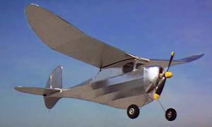

|
Maurice Schoenbrun designed the original Rocketeer A in 1940. The distinctive fuselage shape followed popular thought of the time. The primary design goal was a low center of lateral area. Taken by the timeless outlines I just had to have one as a fun knockabout model for the coming outdoor FF season.
Al Lidberg did a wonderful job keeping many of these classic designs alive by reducing them for mini-electric, rubber or CO2 power. His theory is that smaller models are faster and cheaper to build, and easier to store and transport. I would have to agree. Still, I needed a model just a bit larger than he had drawn. His design for the "Mini-Rocketeer A" has an 18" span, so I made a trip to the copy shop and enlarged it to 32". This size was choosen to accomodate the compressed air motor and bottle from an Airhog. A few other rough calculations of area and estimated weight suggested this size would be fine. Comparison data for both models is below. | |
|  |
Construction was pretty straight forward, despite being the first model I have built on a crutch. Al Lidberg is accurate in his description of the design, there are a lot of pieces in the fuselage! I made no special effort to keep it light, as I wanted a practical "knockabout" FF model for this summer. Most balsa was in the 10 pound range, and covering is alumium Micafilm and Balsaloc. Still, the model finished out in silver at 6.15 oz. Not too bad considering the motor & tank are about 1.75 oz. |
|
Transparent blue Micafilm trim was attached with a combo of 3M-77 and/or Balsaloc. It looks fantastic with the light reflecting from the silver underneath. Total weight is now 6.6 oz. The extra weight didn't seem to be a problem at all, and something like 20 flights were made this last weekend with great success. I think there will be a few more AH powered models in Northern California soon. | |
|
| |
|
The only major change I made was hinging the rudder. It is adjustable through a pull-pull control setup that wraps around a 6-32 nylon bolt mounted ahead of the fin. This is very similar to the setup on my FA Moth I have also though of using a single r/c servo for rudder control to help keep it on the smallish field that the Marin Aero Club uses. Another option was to pull the AH motor and use an small electric r/c system. There is plenty of room in the cabin for such an installation. For now though, I will leave it as a Free Flight model. No DT has been fitted, and so far hasn't been needed. As you can see, the stab mount will easily accomodate a DT if I choose to do so in the future. May 9 was the first outdoor session for the Marin Aero Club '99 season. Despite blustery winds, a few very promising test glides were made over the proverbial field of tall grass, with only a small stab shim needed. The first powered test flights were made at Golden Gate Park on 5/14 and revealed that I had built in too much down thrust. The model would not climb under power and ballooned up with the end of the motor run. Back at the shop, the motor was remounted for the next day at Moffett. Moffett's hangar was a bit small for the flight pattern, but I got it going well using the empty south end of the hangar. It really wants to turn left with motor torque, but without rudder trim it won't turn in the glide. Attempts to glide left would cause it to spiral in under power so I set it up to glide right. Under power the model launches straight, eventually gliding right as the power backs off. With the short flight durations it worked well, but needs right thrust for consistent circling flight. The next morning, Dave Johnson and I went out for a few outdoor tests. As set up, this model is about perfect for the Marin oudoor field. From an easy handlaunch the Rocketeer loafs straight upwind climbing gently as the torque fights the right turn trim. After 20 seconds or so it starts to circle to the right and drift back down wind to land near the launch site. Times were right around 40 seconds without any noticible lift.
The Rocketeer is definitely a fun model. If I were building mine again, I would take a little bit of effort to lighten it up some, but really, it isn't too bad at 6.6 oz. The motor and bottle weigh 1 3/4 oz, so the covered airframe is under 5oz. With 120 psi, I am getting consistent 35-40 second flights with a lot of Old Timer style and grace. It really looks the part chugging around the field with 20-30' of altitude. A bit more duration would be fun, but without swapping the bottle, it is what it is. Models regularly leave the Marin Aero Club field in lift, so I am quite satisfied to keep it nearby and get in more flights.
| |
|
Fueling is no longer possible with the original AirHog docking station. Probably just as well, as that pump is not too efficient. Between 20 and 30 strokes were required to get to the maximum pressure of 85-90 psi. With my bicycle pump and the adapter shown, slightly over 100 psi occurs in just 5 strokes. The pump adapter was turned from aluminum and made to hold a plastic r/c fuel fitting from a local hobby shop. The red fuel fitting mates perfectly with the AirHog motor's charging port, but a similar piece could be machined from a piece of Delrin or other soft material. | |
| Comparison Data | ||||||||||||||||||||
|---|---|---|---|---|---|---|---|---|---|---|---|---|---|---|---|---|---|---|---|---|
| Model | Span | Length | Weight | Area | Wingloading | Times | ||||||||||||||
(in Silver) (with Blue) | ||||||||||||||||||||
Return to Model Index
Copyright 1999 - 2018, Thayer Syme. All rights reserved